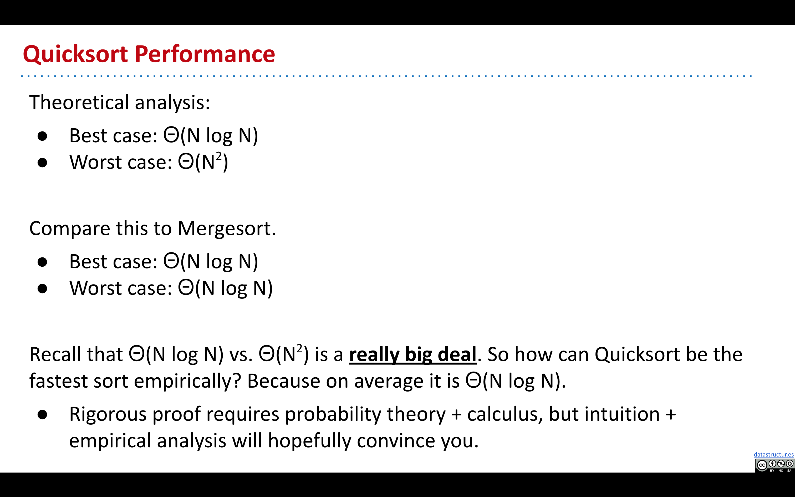
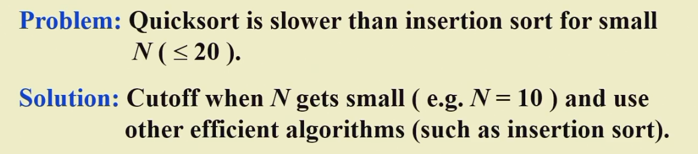
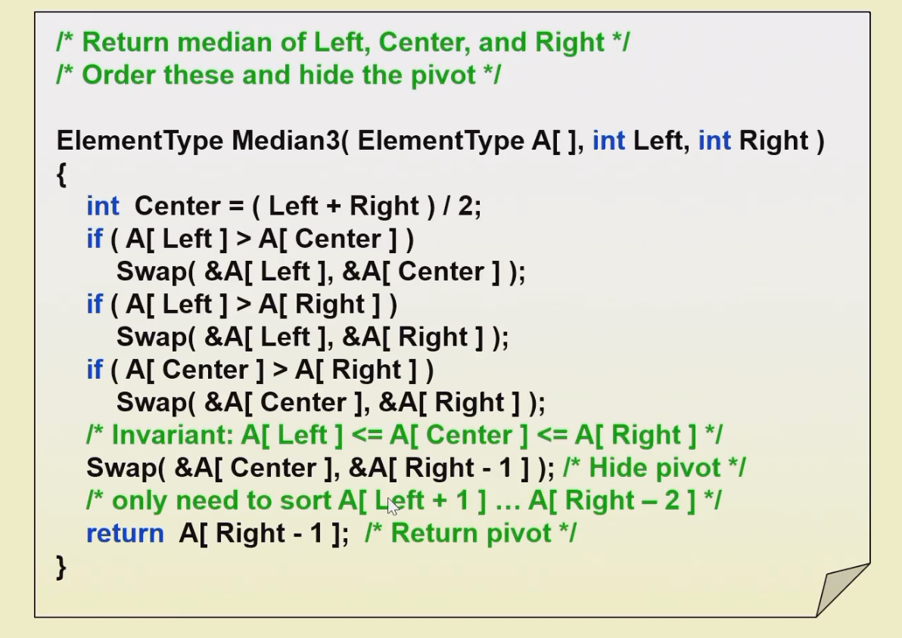
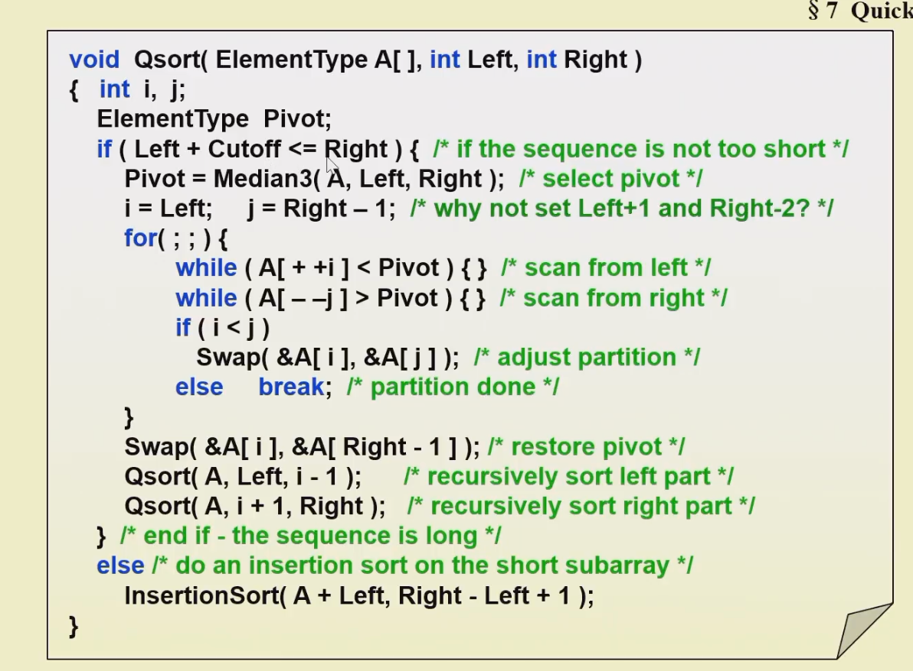
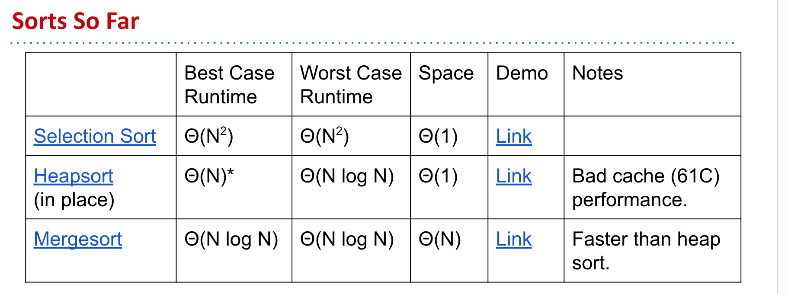
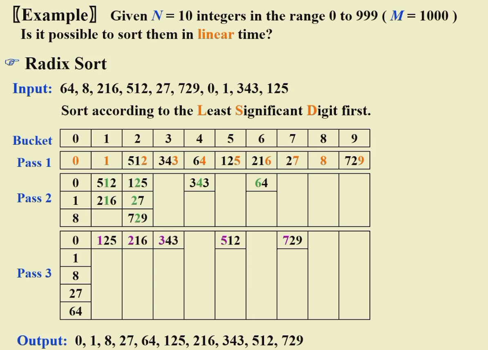

Sorting
1 Sortings¶
1.1 Insertion Sort （aka Xsort）¶
1.1.1 Simple Insertion Sort¶
void InsertionSort(ElementType A[], int N) {
int j, P;
ElementType tmp;
for (P = 1; P < N; P++) {
tmp = A[P]; /* the next coming card */
for (j = P; j>0 && A[j-1]>tmp; j--) {
A[j] = A[j-1];
}
A[j] = tmp; /* place the new card at the proper position */
} /* end for-P-loop */
}
每一次插入排序，可以纠正一个逆序对
1.1.2 Insertion Sort with binary search¶
int binary_search(int arr[], int low, int high, int key) {
while (low <= high) {
int mid = (low + high) / 2;
if (arr[mid] == key) {
return mid;
} else if (arr[mid] < key) {
low = mid + 1;
} else {
high = mid - 1;
}
}
return low;
}
void insertion_sort_binary_search(int arr[], int n) {
for (int i = 1; i < n; i++) {
int key = arr[i];
int j = binary_search(arr, 0, i - 1, key);
for (int k = i - 1; k >= j; k--) {
arr[k + 1] = arr[k];
}
arr[j] = key;
}
}
1.2 Shell Sort 希尔排序¶
希尔排序很不稳定
1.3 Heap Sort 堆排序¶
- Insert all items into a max heap, and discard input array. Create output array.
-
Repeat N times:
- Delete largest item from the max heap.
- Put largest item at the end of the unused part of the output array.
-
Use the magic of the heap to sort our data.
- Getting items into the heap \(O(N log N)\) time.
- Selecting largest item: \(Θ(1)\) time.
- Removing largest item: \(O(log N)\) for each removal.
-
Overall runtime is \(O(N log N) + Θ(N) + O(N log N) = O(N log N)\)
- Far better that selection sort!
-
Memory usage is \(Θ(N)\) to build the additional copy of all of our data.
- Worse than selection sort, but probably no big deal (??).
- Can eliminate this extra memory cost with same fancy trickery.
1.4 In-place Heapsort¶
1.4.1 Phase1：Heapification¶
- Bottom up heapify input array
- sink nodes in reverse level order: sink(k)
- After sinking, guaranteed that tree rooted at position k is a heap
- Repeat N times
- Delete Largest item from the max heap, swapping root with last item in the heap
void Heapsort(ElementType A[], int N) {
int i;
for (i = N/2; i >= 0; i--) { /* build heap */
PercDown(A, i, N);
}
for (i = N - 1; i > 0; i--) {
Swap(&A[0], &A[i]) /* DeleteMax */
PercDown(A, 0, i);
}
}
The average number of comparisons used to heapsort a random permutation of N distinct items is
\[
2NlogN - O(NloglogN)
\]
1.5 Merge Sort 归并排序¶
Demo: https://docs.google.com/presentation/d/1h-gS13kKWSKd_5gt2FPXLYigFY4jf5rBkNFl3qZzRRw/edit?usp=sharing
1.5.1 递归版本¶
- 定义一个递归函数
merge_sort，该函数接收一个待排序的数组arr，以及子数组的起始索引start和结束索引end。 - 在
merge_sort函数中，首先检查起始索引start是否小于结束索引end，如果不小于，则表示数组长度为 0 或 1，无需排序，直接返回。 - 计算子数组的中间索引
mid，可以使用(start + end) / 2来计算。 - 递归调用
merge_sort函数对左半部分子数组进行排序，即调用merge_sort(arr, start, mid)。 - 递归调用
merge_sort函数对右半部分子数组进行排序，即调用merge_sort(arr, mid+1, end)。 - 完成左右子数组的排序后，调用合并函数
merge，将左右两个有序子数组合并为一个有序数组。合并函数merge的实现可以参考前面补充的merge函数。 - 将合并后的有序数组复制回原始数组的对应位置，完成排序。
- 最后，返回排序后的数组。
下面是使用伪代码表示的递归归并排序算法：
function merge_sort(arr, start, end):
if start >= end:
return arr
mid = (start + end) / 2
merge_sort(arr, start, mid)
merge_sort(arr, mid+1, end)
merge(arr, start, mid, end)
return arr
代码实现：
void MergeSort(int Arr[], int N) {
int *Temp = (int *)malloc(N * sizeof(int));
if (Temp != NULL) {
Sort(Arr, Temp, 0, N-1);
free(Temp);
} else {
printf("No space for temp array!!!");
}
}
// 递归排序
void Sort(int Arr[], int Temp[], int left, int right) {
if (left < right) {
int mid = (left + right) / 2;
Sort(Arr, Temp, left, mid);
Sort(Arr, Temp, mid+1, right);
Merge(Arr, Temp, left, mid, right);
} else {
return ;
}
}
// 归并
void Merge(int Arr[], int Temp[], int left, int mid, int right) {
int l_pos = left;
int r_pos = mid+1;
int i = left;
while (l_pos <= mid && r_pos <= right) {
if (Arr[l_pos] <= Arr[r_pos]) {
Temp[i] = Arr[l_pos];
i++;
l_pos++;
} else {
Temp[i] = Arr[r_pos];
i++;
r_pos++;
}
}
while (l_pos <= mid) {
Temp[i++] = Arr[l_pos++];
}
while (r_pos <= right) {
Temp[i++] = Arr[r_pos++];
}
while (left <= right) {
Arr[left] = Temp[left];
left++;
}
}
1.5.2 迭代版本¶
迭代实现的归并排序是一种非递归的排序算法，它使用循环和迭代的方式进行数组的划分和合并。与递归实现相比，迭代实现的归并排序不需要使用函数调用栈，因此在一些情况下可能具有更好的性能。
以下是迭代实现归并排序的基本思路：
- 定义一个辅助数组
sorted，用于存储排序后的元素。 - 初始化子数组的长度
length为 1，表示最初每个子数组只包含一个元素。 - 进行循环迭代，直到子数组的长度超过待排序数组的长度。
- 在每一轮迭代中，通过循环遍历数组，将相邻的两个子数组进行归并操作。
- 归并操作的步骤与递归实现中的归并操作相同，将两个有序的子数组合并为一个有序数组。
- 在归并操作后，将排序后的部分复制回原始数组中对应的位置。
- 将子数组的长度
length扩大两倍，准备进行下一轮迭代。 - 最终，当子数组的长度
length超过待排序数组的长度时，排序完成。
function merge_sort(arr):
length = 1
n = length(arr)
sorted = new array of size n
while length < n:
for start = 0 to n - length step 2 * length:
mid = start + length - 1
end = min(start + 2 * length - 1, n - 1)
merge(arr, sorted, start, mid, end)
copy sorted to arr
length = 2 * length
return arr
代码实现：
void merge_sort( ElementType list[], int N )
{
ElementType extra[MAXN]; /* the extra space required */
int length = 1; /* current length of sublist being merged */
while( length < N ) {
merge_pass( list, extra, N, length ); /* merge list into extra */
length *= 2;
}
}
void merge_pass(ElementType list[], ElementType sorted[], int N, int length) {
int i, j, k = 0;
for (i = 0; i <= N - 2 * length; i += 2 * length) { // complete 2 equal length
int left = i;
int right = i + 2 * length - 1;
int mid = (right + left) / 2;
int l_pos = left;
int r_pos = mid + 1;
if (right >= N) {
right = N - 1;
}
while (l_pos <= mid && r_pos <= right) { //
if (list[l_pos] < list[r_pos]) {
sorted[k++] = list[l_pos++];
} else {
sorted[k++] = list[r_pos++];
}
}
while (l_pos <= mid) {
sorted[k++] = list[l_pos++];
}
while (r_pos <= right) {
sorted[k++] = list[r_pos++];
}
}
/* 最后进行一次归并剩余元素 */
int left = i;
int mid = i + length - 1;
int right = N - 1;
/* 归并操作 */
k = left; /* k 用于遍历 sorted[] 数组 */
int l = left; /* l 用于遍历左半边子序列 list[left:mid] */
int r = mid + 1; /* r 用于遍历右半边子序列 list[mid+1:right] */
while (l <= mid && r <= right) {
if (list[l] <= list[r]) {
sorted[k++] = list[l++];
} else {
sorted[k++] = list[r++];
}
}
while (l <= mid) {
sorted[k++] = list[l++];
}
while (r <= right) {
sorted[k++] = list[r++];
}
for (j = 0; j < N; j++) {
list[j] = sorted[j];
}
}
1.6 Quick Sort¶
1.6.1 Core Idea¶

1.6.2 QuickSort Demo¶
在这个 demo 中，总是选取 A[0] 作为 pivot，其实在排好序的情况下容易导致 worst case 的出现，在下文有解决方法
1.6.3 Complexity Compare¶

1.6.4 Avoiding Worst Cases¶
- Pick pivots randomly. (random generation is expensive)
- Shuffle before you sort.
- Median of Tree Partitioning: Pivot = mid(left, center, right)
1.6.5 Partition Strategy¶
1.6.6 Small Array¶

1.6.7 伪代码¶

ElementType Median3(ElementType A[], int Left, int RIght) {
int Center = (Left + Right) / 2;
if (A[Left] > A[Center]) {
Swap(&A[Left], &A[Right]);
}
if (A[Left] > A[RIght]) {
Swap(&A[Left], A[Right]);
}
if (A[Center] > A[Right]) {
Swap(&A[Center], &A[Right]);
}
/*.A[Left] < A[Center] < A[Right] */
Swap(&A[Center], $A[Right - 1]); /* Hide Pivot */
return A[Right - 1];
}

void Qsort(ElementType A[], int Left, int Right) {
int i, j;
if (Left + Cutoff <= Right) { // if the sequence is not too short
Pivot = Median3(A, Left, Right);
i = Left; j = Right - 1;
for (;;) {
while (A[++i] < pivot) {}
while (B[--j] > pivot) {}
if (i < j) {
Swap(&A[i], &A[j]);
} else {
break;
}
}
Swap(&A[i], &A[Right - 1]); // restore pivot
Qsort(A, Left, i-1);
Qsort(A, i+1, Right);
} else {
InsertionSort(A+Left, Right-Left+1);
}
}
1.7 Conclusion¶

1.8 Bucket Sort 桶排序¶
1.8.1 Radix Sort 基准排序¶
1.8.2 Least Significant Digit first LSD 按照最小的位来排¶
放入 bucket 的时候按照上一轮的顺序读
